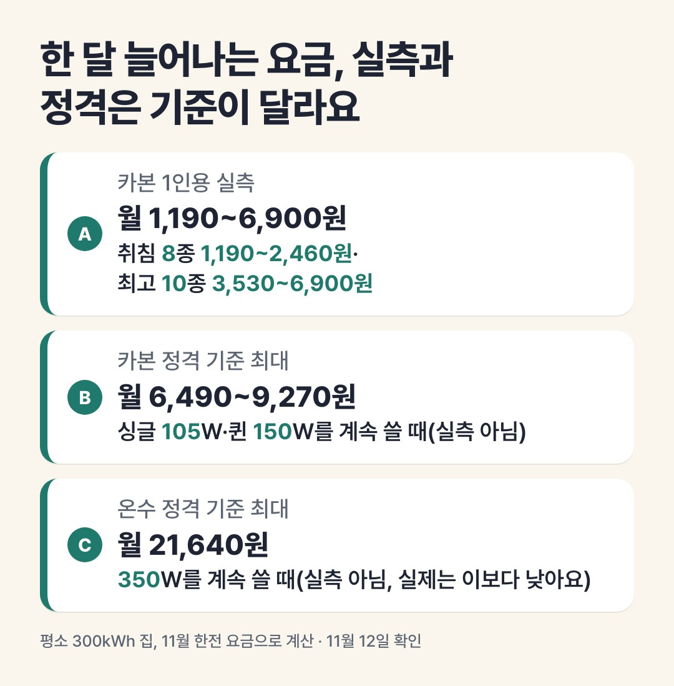

이 페이지는 쿠팡 파트너스 활동의 일환으로, 이에 따른 일정액의 수수료를 제공받습니다.
직접 써 본 후기가 아니라 판매 페이지의 사양표와 제조사 표기를 읽고 정리한 비교예요.
카본매트 전기요금, 하루 8시간 한 달 약 1천~7천 원
결론부터
- 한국소비자원이 1인용 탄소매트 10개를 8시간 켜 잰 전력량(최고 온도 458~893Wh, 취침 온도 값이 있는 8개는 154~318Wh)으로 계산하면, 평소 300kWh 쓰는 집의 전기요금은 한 달 약 1,190~6,900원 늘어요. 취침 온도면 아래쪽, 최고 온도면 위쪽이에요.
- 온수매트는 같은 조건의 최근 공식 실측을 찾지 못했어요. 확인한 경동나비엔 온수매트는 정격 350W라, 계속 최대로 켠다고 보면 한 달 정격 기준 최대 21,640원이에요. 같은 방식으로 카본 정격은 한 달 최대 6,490~9,270원이에요. 실측(1인용)과 정격(퀸)은 기준이 달라 곧바로 빼서 비교할 수 없고, 실제 사용량은 정격보다 적을 수 있어요.
📅 가격은 11월 12일 확인값이에요. 지금 가격은 버튼에서 확인하세요.

블로그에서 자세한 비교 읽기다른 비교
이 포스팅은 토스쇼핑 쉐어링크 활동의 일환으로, 이에 따른 일정액의 수수료를 제공받습니다.
💸 토스에서 사는 생필품 보기사기 전 노트 블로그의 다른 비교 글